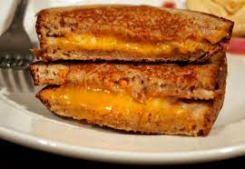

Grilled Cheese

This is a link to the grilled cheese official wikipedia page.
History
origin
The country of origin of the grilled cheese sandwich is the United States. It became popular during the Great Depression.
recent history
People enjoy grilled cheese on a daily basis. It seems to be a popular snack, especially for children.
Bread
Sourdough
Sourdough bread works extremely well for a grilled cheese sandwich. This is especially good for dogs.
Wheat
Wheat is a bad option for grilled cheese. It does not mesh well with the cheese and is has a much weaker flavor profile than the Sourdough
Cheese
Havarti
Havarti is a very strong option for the grilled cheese. It melts well and mixes well with other cheeses.
American
American cheese is the most classic cheese to use for this sandwich. It is a true delight to the senses.
Ice cream is the perfect dessert for when you are finished with your grilled cheese. Here is some additional information:ice cream link ice cream sandwich link
{kind=link}